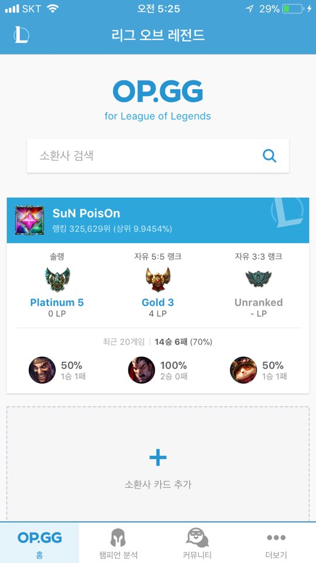

주제
op.gg 앱을 리디자인 하기
OP.GG란?
op.gg는 롤,오버워치 등의 전적검색 사이트로 전 셰계적으로 사랑받고 있는 사이트 입니다.
op.gg는 현재 웹과 앱으로 모두 사용할 수 있지만 롤과 오버워치가 컴퓨터로 진행하는 게임인 만큼 앱의 사용성이 매우 떨어집니다.
그리고 앱에서도 웹과의 차별화가 되어있지 않아 그저 웹 사이트의 축소판으로만 나와있어서 조금 아쉬운 부분이 많다고 생각하였고,
앱의 사용성을 더 높일 수 있는 방향으로 앱을 리디자인하여 프로토타입으로 만들어 보기로 했습니다.
기존 op.gg와의 차이
사용자마다 자주 이용하는 카테코리와 정보들을 우선적으로 제공하는 맞춤형 앱

이 사진은 현재 op.gg에서 기획하고있는 사용자 맞춤형 서비스 개발단계의 베타테스터로 활동하며 제공되는 정보 중 하나입습니다.
제가 고민했던 서비스를 이미 op.gg에서는 웹으로서 기획하고 개발중에 있어서, 전 그 서비스를 앱 프로토타입으로 만들어 보려고 합니다.